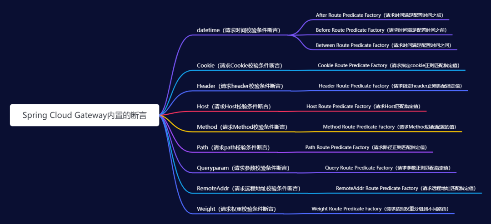

Features [0] #
- Built on Spring Framework 5, Project Reactor and Spring Boot 2.0
- Able to match routes on any request attribute.
- Predicates and filters are specific to routes.
- Circuit Breaker integration.
- Spring Cloud DiscoveryClient integration
- Easy to write Predicates and Filters
- Request Rate Limiting
- Path Rewriting
核心概念 [1][2] #
-
路由（Route）
- id：路由标识，要求唯一，名称任意（默认值 uuid，一般不用，需要自定义）
- uri：请求最终被转发到的目标地址
- order： 路由优先级，数字越小，优先级越高
- predicates：断言数组，即判断条件，如果返回值是boolean，则转发请求到 uri 属性指定的服务中
- filters：过滤器数组，在请求传递过程中，对请求做一些修改
-
谓词、断言（Predicate） 允许开发人员匹配 HTTP 请求中的内容，比如请求头或请求参数，最后根据匹配结果返回一个布尔值。参照 Java8 的新特性Predicate.
-
过滤器（Filter） 可以在返回请求之前或之后修改请求和响应的内容。
路由（Route）[1][2] #
服务发现-集成nacos服务注册中心 [2] #
- 服务路由配置
spring:
cloud:
gateway:
routes:
- id: gateway-provider_1
## 使用了lb形式，从注册中心负载均衡的获取uri
uri: lb://gateway-provider
## 配置断言
predicates:
- Path=/gateway/provider/**
filters:
- AddResponseHeader=X-Response-Foo, Bar
- 自动路由配置
# enabled：默认为false，设置为true表明spring cloud gateway开启服务发现和路由的功能，网关自动根据注册中心的服务名为每个服务创建一个router，将以服务名开头的请求路径转发到对应的服务
spring.cloud.gateway.discovery.locator.enabled = true
# lowerCaseServiceId：启动 locator.enabled=true 自动路由时，路由的路径默认会使用大写ID，若想要使用小写ID，可将lowerCaseServiceId设置为true
spring.cloud.gateway.discovery.locator.lower-case-service-id = true
动态路由-整合 Apollo [2] #
/**
* Apollo路由更改监听刷新
*/
@Configuration
public class GatewayPropertRefresher implements ApplicationContextAware, ApplicationEventPublisherAware
{
...
/**
* 监听路由修改
*/
@ApolloConfigChangeListener(interestedKeyPrefixes = "spring.cloud.gateway.")
public void onChange(ConfigChangeEvent changeEvent)
{
refreshGatewayProperties(changeEvent);
}
/**
* 刷新路由信息
*/
private void refreshGatewayProperties(ConfigChangeEvent changeEvent)
{
logger.info("gateway网关配置 刷新开始！");
preDestroyGatewayProperties(changeEvent);
//更新配置
this.applicationContext.publishEvent(new EnvironmentChangeEvent(changeEvent.changedKeys()));
//更新路由
refreshGatewayRouteDefinition();
logger.info("gateway网关配置 刷新完成！");
}
...
}
动态路由-整合nacos [3] #
@Component
@Slf4j
public class NacosDynamicRouteService implements ApplicationEventPublisherAware {
private String dataId = "gateway-router";
private String group = "DEFAULT_GROUP";
@Value("${spring.cloud.nacos.config.server-addr}")
private String serverAddr;
@Autowired
private RouteDefinitionWriter routeDefinitionWriter;
private ApplicationEventPublisher applicationEventPublisher;
private static final List<String> ROUTE_LIST = new ArrayList<>();
@PostConstruct
public void dynamicRouteByNacosListener() {
try {
ConfigService configService = NacosFactory.createConfigService(serverAddr);
configService.getConfig(dataId, group, 5000);
configService.addListener(dataId, group, new Listener() {
@Override
public void receiveConfigInfo(String configInfo) {
clearRoute();
try {
if (StringUtil.isNullOrEmpty(configInfo)) {//配置被删除
return;
}
List<RouteDefinition> gatewayRouteDefinitions = JSONObject.parseArray(configInfo, RouteDefinition.class);
for (RouteDefinition routeDefinition : gatewayRouteDefinitions) {
addRoute(routeDefinition);
}
publish();
} catch (Exception e) {
log.error("receiveConfigInfo error" + e);
}
}
@Override
public Executor getExecutor() {
return null;
}
});
} catch (NacosException e) {
log.error("dynamicRouteByNacosListener error" + e);
}
}
private void clearRoute() {
for (String id : ROUTE_LIST) {
this.routeDefinitionWriter.delete(Mono.just(id)).subscribe();
}
ROUTE_LIST.clear();
}
private void addRoute(RouteDefinition definition) {
try {
routeDefinitionWriter.save(Mono.just(definition)).subscribe();
ROUTE_LIST.add(definition.getId());
} catch (Exception e) {
log.error("addRoute error" + e);
}
}
谓词、断言（Predicate）[1][2] #

过滤器（Filter）[1][2] #
-
生命周期
- PRE
- POST
-
作用范围
- GatewayFilter 局部过滤器
- 默认预定义
- 限流
- 默认预定义
- GlobalFilter 全局过滤器
- 自定义全局过滤器
- 统一鉴权过滤器
- 自定义全局过滤器
- GatewayFilter 局部过滤器
稳定性 #
熔断降级-Hystrix [3] #
server.port: 8082
spring:
application:
name: gateway
redis:
host: localhost
port: 6379
password: 123456
cloud:
gateway:
routes: ##
- id: rateLimit_route
uri: http://localhost:8000
order: 0
predicates: ##
- Path=/test/**
filters: ##
- StripPrefix=1
- name: Hystrix
args:
name: fallbackCmdA
fallbackUri: forward:/fallbackA
hystrix.command.fallbackCmdA.execution.isolation.thread.timeoutInMilliseconds: 5000
流控和降级-Sentinel [3] #
高可用网关[1] #
Nginx负载均衡到部署的多个Gateway